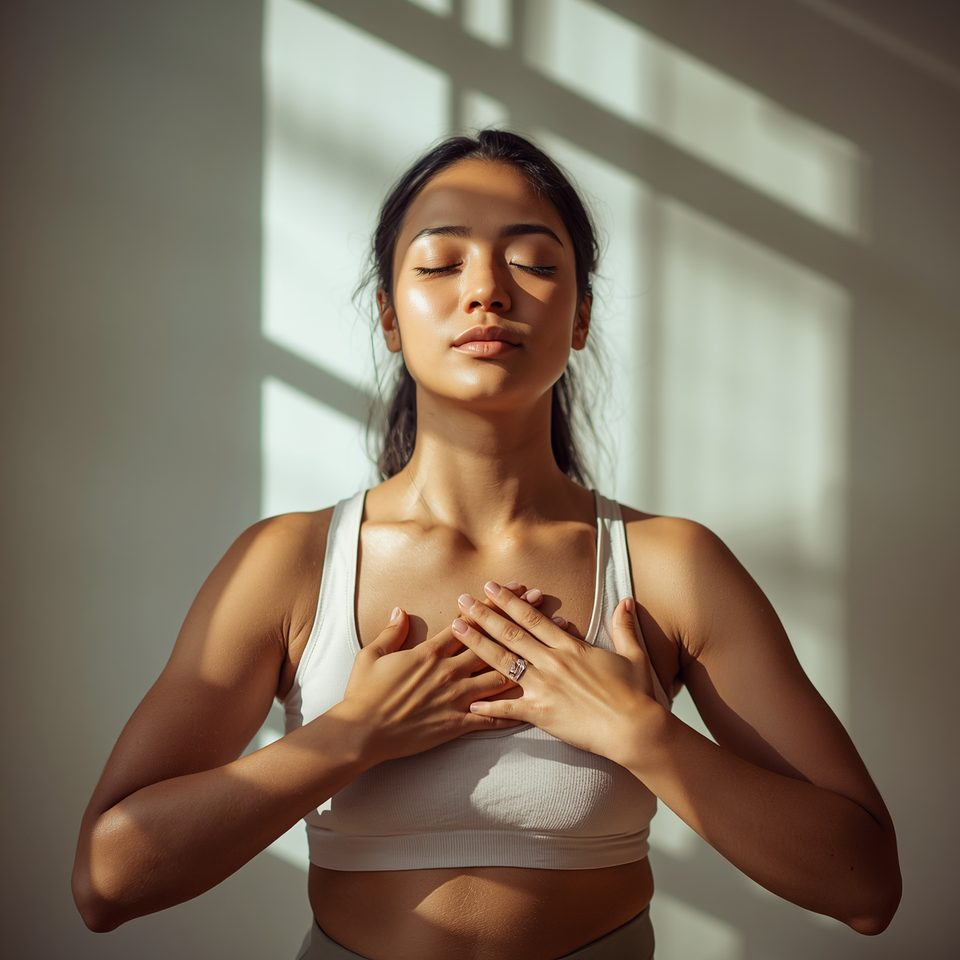

Coaching built around the person, not just the goal
Personalised coaching, delivered online for individuals from 14 to 86 years old, across the globe. Every program considers body history, lifestyle, recovery, emotional wellbeing, habits, and goals — because no two bodies or lives are the same.

General wellbeing
Strength, mobility, weight loss, hypertrophy, and physical resilience.
Lifestyle & behaviour change
Stress regulation, habit building, emotional wellbeing, and sustainable lifestyle shifts.
Specific life stages
Prepartum, postpartum, injury recovery support, and rebuilding confidence in movement.
Small, practical changes that fit your life — and stay with you.
Not another fitness program
Humankind Movement is built on the belief that health should support your life — not take over it.
- Understanding your body before forcing change
- Looking at lifestyle before blaming motivation
- Supporting the nervous system, not just training harder
- Building habits that fit your real life
- Improving awareness before chasing outcomes
- Making practical changes that stay
Postpartum recovery
Helping women rebuild strength, restore confidence, and heal safely after childbirth — without bounce-back pressure.

What it's usually told to be
After childbirth, many women hear "give it time," "this is normal," or "your body will recover on its own" — while continuing to deal with diastasis recti, back pain, pelvic weakness, poor posture, low energy, or fear of exercising again. That deserves proper rehabilitation, not guesswork.
What this program is
Diastasis recti rehabilitation, core restoration, pelvic stability work, breath mechanics, posture correction, strength rebuilding, and a gradual return to exercise — built around your own recovery timeline, not a generic one.
One client came in with a five-finger diastasis recti separation. Over three months of breathwork, deep core activation, progressive mobility, strength rebuilding, and lifestyle changes, that gap reduced to two fingers.1
This is not: just ab workouts or Kegel exercises, high-intensity postpartum workouts, or weight-loss pressure.
Recovery isn't about shrinking your body. It's about rebuilding capacity. Perfect for new mothers, women months or years postpartum still experiencing weakness, and professionals returning after maternity leave.
Programs for corporates and communities
Humankind Movement also designs customised wellness programs for corporate teams, sports communities, residential communities, youth groups and educational spaces, and wellness communities — including postpartum recovery offered through HR wellness programs and founder networks.
Sessions may include movement, mobility, breathwork, stress regulation, lifestyle awareness, and nervous system education.
4.9★ average from 27 Google reviews
"Most valuable support I got from him was during the preparation before my hip joint replacement surgery and post-surgery recovery. I highly recommend getting in touch with him for his guidance."
— Md. Ashiqul Islam"His personalised approach helped me reach my health goals in a sustainable way. He is knowledgeable, supportive, and truly cares about your well-being."
— Vinay Vyas"Ajith's focus on not just physical health, but also mental health and holistic behavioural practices, sets him apart. His coaching has truly been life-changing."
— Ateeshay Jain- This is one client's individual experience, not a guaranteed outcome — diastasis recti recovery timelines vary by person, which is why the program is built around each client's own recovery timeline rather than a fixed schedule. ↩
Health is personal. Coaching should be too.
Online coaching for individuals across the globe, and programs for corporates and communities.
Get in touch